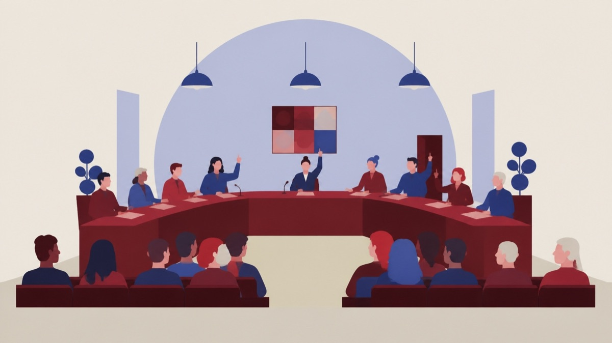

Besluttet 30. september, Økonomiudvalget, Brøndby
Orientering om status på Brøndby 2030

Kort fortalt
- Forslaget
- Kommunalbestyrelsen tager status på indikatorerne for de fem fokusområder i
- Hvem
- Økonomiudvalget, Brøndby Kommune
- Hvornår
- Onsdag 30. september 2026
- Status
- Besluttet. Indstillingen anbefales. Beslutningshistorik Børne- og Skoleudvalget - 2026-2029, 23.09.2026, Punkt 12 Indstillingen anbefales. Ældre- og Omsorgsudvalget - 2026-2029, 23.09.2026, Punkt 9 Indstillingen anbefales. Grøn omstilling og Miljøudvalget - 2026-2029, 23.09.2026, Punkt 3 Indstillingen anbefales. Kultur-, Idræts- og Fritidsudvalget - 2026-2029, 23.09.2026, Punkt 13 Indstillingen anbefales. Beskæftigelses-, Handicap- og Socialudvalget - 2026-2029, 23.09.2026, Punkt 10 Til efterretning.Beslutningen er forkortet her. Læs hele beslutningen
Er noget forkert her? Skriv til os
Læs hele sagen Kommunens egen tekst
Indstilling
Direktionen indstiller,
1. at Kommunalbestyrelsen tager status på indikatorerne for de fem fokusområder i
Brøndby 2030 til efterretning.
Sagsfremstilling
Brøndby Kommunes fælles strategi Brøndby 2030 indeholder en vision, fem fokusområder
og to til fire målsætninger for hvert fokusområde. Målsætningerne er en del af den politisk
vedtagne strategi og beskriver, hvilken forandring kommunen ønsker at skabe for at realisere
visionen og fokusområderne.
For at kunne følge op på målsætningerne – og se om der bliver skabt forandringer – har
forvaltningen valgt en række indikatorer. Indikatorerne er ikke nødvendigvis udtryk for, hvilke
indsatser, der skal prioriteres, men er valgt ud fra, at data allerede er tilgængelige eller er
nemme at følge op på gennem evalueringer. Indikatorerne fungerer som et arbejdsredskab
for forvaltningen i implementeringen af strategien, og Kommunalbestyrelsen får årligt en
status på indikatorerne til orientering. Status for indikatorerne 2026 findes i bilag 1.
Indikatorerne bliver løbende udskiftet og tilpasset i takt med, at der kommer ny viden eller
nye tilgængelige data. For at kunne sammenligne med sidste års status er status for 2025
vedlagt til orientering som bilag 2.
Økonomiske konsekvenser
Ingen bemærkninger.
Konsekvenser for grøn omstilling
Der er ingen direkte konsekvenser for den grønne omstilling.
Side 1
Beslutning
Indstillingen anbefales.
Beslutningshistorik
Børne- og Skoleudvalget - 2026-2029, 23.09.2026, Punkt 12
Indstillingen anbefales.
Ældre- og Omsorgsudvalget - 2026-2029, 23.09.2026, Punkt 9
Indstillingen anbefales.
Grøn omstilling og Miljøudvalget - 2026-2029, 23.09.2026, Punkt 3
Indstillingen anbefales.
Kultur-, Idræts- og Fritidsudvalget - 2026-2029, 23.09.2026, Punkt 13
Indstillingen anbefales.
Beskæftigelses-, Handicap- og Socialudvalget - 2026-2029, 23.09.2026, Punkt 10
Til efterretning.
Teknik- og Planudvalget - 2026-2029, 23.09.2026, Punkt 12
Indstillingen anbefales.
Kilde: Brøndby Kommune, Økonomiudvalget, referat fra mødet onsdag 30. september 2026, punkt 21. Læs den originale sag hos kommunen.